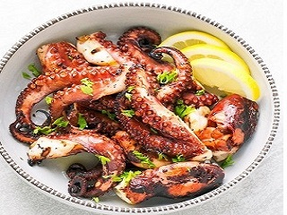

Polvo

A tigelinha de polvo é uma excelente pedida para os amantes de um restaurante de frutos do mar. Afinal, ela contém uma das principais iguarias destes locais. Assim, é servida junto de uma boa porção de batatas e tomates refogados na manteiga e limão.
Casquinha de Siri

Casquinha de Siri, é uma entrada feita com base em diversos frutos dos mares e peixes, servido na casca de um siri. Este é um prato bem elaborada é otimo pra abrir o apetite.
Camarao

Pastel de camarao com cebolas cortadas, com saborosos pimentões verdes e vermelhos feitos fritos. este tipo de entrada é a mais pedida pra quem gosta de explosões de sabores.